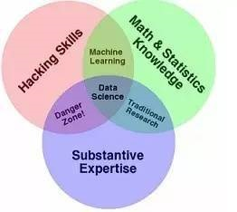

如何成为一个AI算法工程师 – 漫谈
Table of Contents
- 风险提示: 以下内容可能主观,片面,不严谨,没逻辑,单调没案例,也许会造成您的心理不适,特提前告知.
1 引言
- 为何会思考这个问题
- 被咨询如何从业
- 工作当中的反思
- AI算法
- 机器学习
- 深度学习
- 强化学习
- 监督学习
- …
- 语音识别
- 图像处理
- …
- 机器学习
- 疑问
- 学了算法会用吗?
- 学的东西能解决你的问题吗?
- 推荐的起点 – 动手强于理论
- 如何成为一个data scientist:数据科学家是指能采用科学方法、运用数据挖掘工具对复杂多量的数字、符号、文字、网址、音频或视频等信息进行数字化重现与认识，并能寻找新的数据洞察的工程师或专家.
- 数据挖掘
- 数据处理
- 数据洞察
- 如何成为一个data scientist:数据科学家是指能采用科学方法、运用数据挖掘工具对复杂多量的数字、符号、文字、网址、音频或视频等信息进行数字化重现与认识，并能寻找新的数据洞察的工程师或专家.
2 如何成为一个data scientist
- 
- 三大基础
- 计算机技能
- 数学(统计…)
- 领域知识
- 实用技能推荐
- 搜索能力
- github使用
- coding/debug
- python&代码包
- numpy
- matplotlib
- sklearn
- pytorch…
- …
- 快速上手 – 了解自己,不要挑战自制力
- 完成特别简单且耗时短的实践课程 – 完成不费力
- 比如sklearn轻松使用–morvan
- 进入一个能够给予指导项目组 – 工作压力
- 报名一门相关课程 – 花钱
- 指导上手实践的教程–实践能力提升正反馈
- 找一个背景领域开始解决问题 – 能输出(输出阻力小于输入)
- !关于理论知识
- 不要从理论教材入手学习
- 一定阶段后补充理论知识:发现无法或低效完成任务时
- 关于paper
- 新人不必须读论文
- 课程或年度重要论文值得一读
- 追求创新再开始跟随前沿论文
- 完成特别简单且耗时短的实践课程 – 完成不费力
- 三大基础
3 工作日的时间规划 – 机械化
- 一上班查看backlog和email
- 查看模型优化情况,简单分析结果
- 更新backlog
- 快速看最近论文进展或行业进展
- 稍微细读一篇paper
- [选做]使用代码库
- 开始backlog中的任务
- [选做]交流
- 下班前1小时分析是否有新的知识或是知识更新
- 有: 下班前半小时更新
4 感觉好像不对?
- 我问的是AI算法工程师,为什么要给我讲data scientist呢!
- 基础的能力仍然需要
- 平时用场景少[如果不是相关方向]
- 找新工作需要一定时间准备,需要针对岗位要求
- XX公司机器学习实习招聘
- 有机器学习基础只是,对多分类算法,近年来主流的深度网络结构有充分的了解
- 熟悉一种深度学习平台如tensorflow,pytorch
- 加分项:经验,论文
- XX公司机器学习实习招聘
- 我想做的是特别高端,像搞出AlphaGo算法那样的职业,讲的差高深算法太多
- 数据科学家分类–[偏向数据,偏向商务,偏向算法,…]链接丢失
- 生态环境: 偏学术,学术产业结合,偏产业
- 到底要达到的目的是什么?
- 找到一份这个方向的工作
- 解决人工智能范畴内的问题
- 使用机器学习技术解决一些问题
- …
5 要的到底是什么? – 发现真实的需求 ; 如何实现? – 让事情简单一点,局部最优解
- OKR – 可参考
- 需求探索
- 更深:足够具体可行:WHAT
- 更进:能够说服自己:WHY
- 更全面:反向拷问:IF NOT
- 例子:想完成一次好的演讲分享
- 什么是好的演讲分享
- 能让人留下印象
- 强烈情绪情感:幽默,好玩,悲伤,…
- 自黑
- 震撼的视频
- 不幸的经历
- 简单清晰逻辑:总分,时序,举例,…
- 切身参与:互动问答,提及相关人物
- 强烈情绪情感:幽默,好玩,悲伤,…
- 能给人参考
- 面临的问题:
- 想要学一些AI相关的东西
- 开始入门
- 少走弯路
- 能够实现的解决办法
- 尽量简单
- 花的时间短
- 入门门槛低
- 能够有点用
- 能吹牛
- 能解决简单问题
- …
- 尽量简单
- 面临的问题:
- 能有积极的力量
- 一切会变好
- 真有方法
- 鸡汤
- 一切会变好
- …
- 能让人留下印象
- 为什么需要一次好的演讲分享
- 好的分享
- 有收获想分享大家,也许对大家有帮助
- 能得到欣赏
- 为什么演讲
- 话痨
- 快速反馈,得到满足感
- 简单
- 好的分享
- 什么是好的演讲分享
- 例子:想要学习机器学习
- 不学机器学习会怎么样?
- 不会怎么样:over
- 职业之路受阻
- 什么是受阻
- 为什么会受阻
- 不学机器学习会怎么样?
- 需求排序
- 不同需求 – 打分制/二维[重要|紧急]
- 需求的完成度 – 主干;部分分支,..
- 如:
- 1小时的分享内容
- 提纲
- 内容
- 有参考价值
- …
- …
- 1小时的分享内容
- 如:
- 贪心: 选择 当下 最优的
- 不用想得太长远
- 分析错了也无妨
- 例
- 看英文原版paper还是看中文笔记?
- 迭代
- # 开始解决问题/发现需求
- while 未完成 – 迭代
- 需求完成度排序
- 解决 – 贪心
- if 会
- 做
- if 不会
- if 会
贪心+迭代法则 – 费扬
方法论引导问题解决: 调用模块
先抄会用再改(学)后创新[抄用改创]
知识积累: 总结+迭代+存储+易获取+搜索[总代存获搜]
做事情的过程是一个螺旋上升的轨迹 – 唐博
分享
6 其他分享
- 聊一聊焦虑
- 我: 自我否定
- 与人沟通 – 张老师
- be nice
- just do it
- so what
- 焦虑
- take it easy
- 过去无法改变
- 将来还未到来
- 当下一切仍好
- just do it
- 时间最珍贵
- 永远做不完
- 知道怎么做
- so what
- 不能承受的结果
- 落难王子
- 不能承受的结果
- 有没有人愿意聊一聊自己的感受
- take it easy
7 资源推荐
- 网站
- github
- star多
- github
- 网课
- 吴恩达Andrew Ng
- 书
- 集体智慧编程
- python机器学习及实践
- 链接
- 实践教程
- morvan